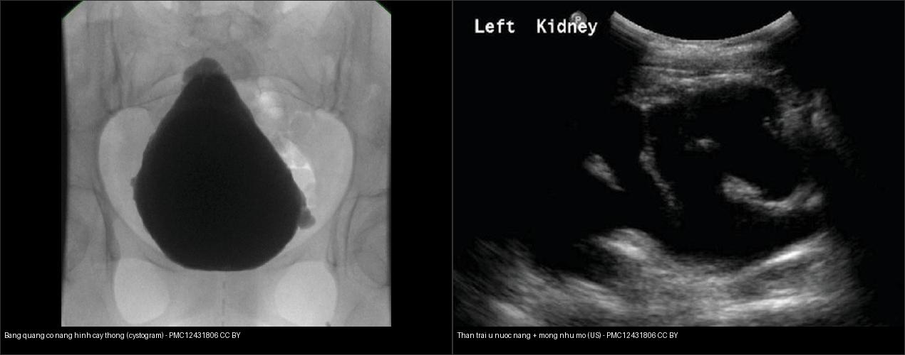
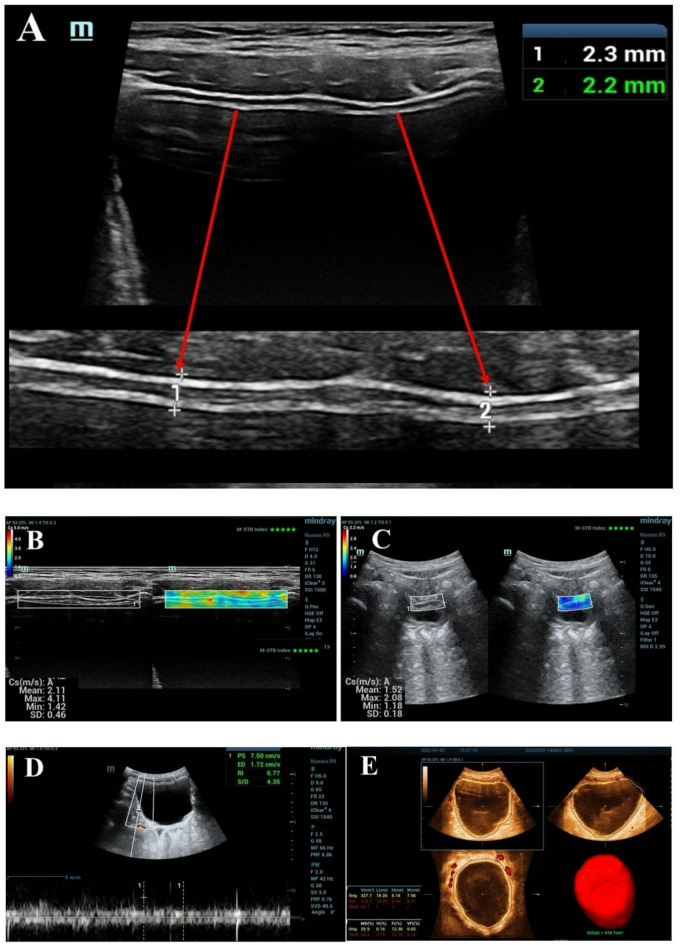
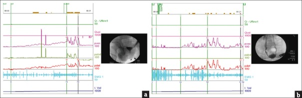
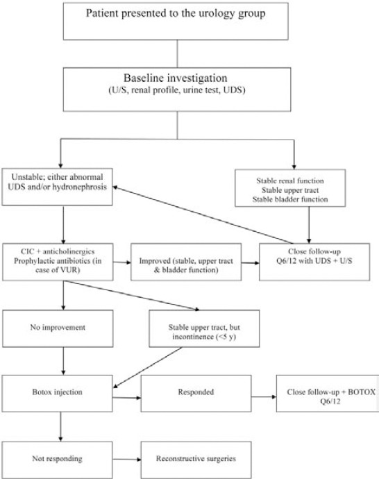
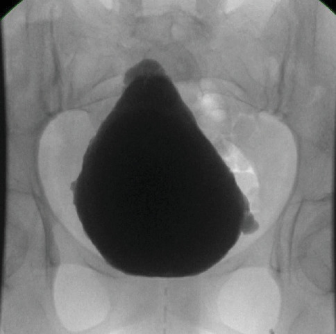
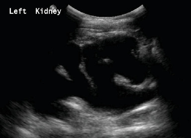
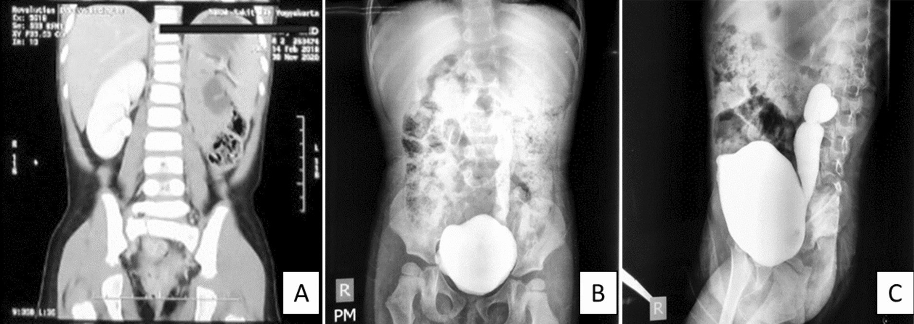
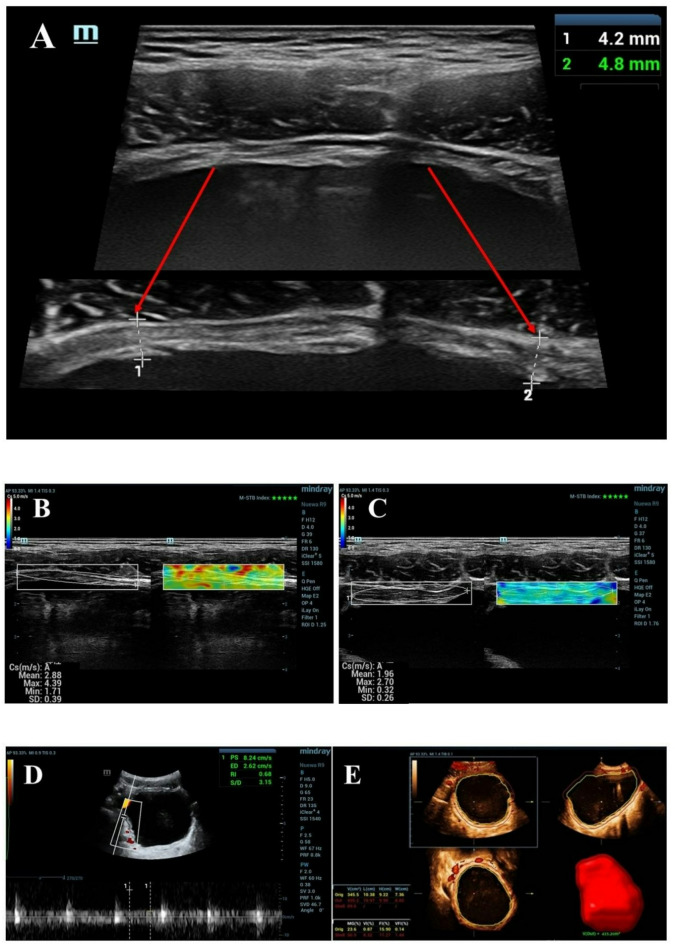
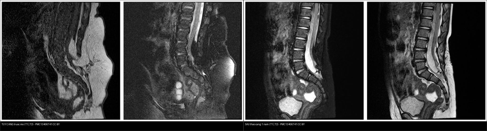

668 — Theo dõi dài hạn sau tháo căng tủy & bàng quang thần kinh ở trẻ: tái căng, urodynamics & bảo tồn chức năng thận / Long-term follow-up of tethered cord & neurogenic bladder
Tags: pattern:bang-quang-than-kinh vung:tiet-nieu-nhi vung:tuy-cot-song-nhi score:VUR-ISRSC protocol:VUD-urodynamics protocol:MRI-cot-song
Mức chắc chắn (certainty): tổng hợp y văn (literature synthesis) — tổng hợp từ bài tổng quan bàng quang thần kinh ở trẻ myelomeningocele (Sič A et al., Diseases 2025, PMC12025530), bài theo dõi tái căng (Lee JY et al., J Korean Neurosurg Soc 2020, PMC7218204), nghiên cứu siêu âm động–tĩnh dự báo VUR/sẹo thận (da Silva CMP et al., Int Braz J Urol 2023, PMC10947619), nghiên cứu siêu âm đa phương thức (Wang J et al., Sci Rep 2026, PMC12890931) và phác đồ phòng khám spina bifida (Al-Hazmi HH et al., Saudi Med J 2014, PMC4362106).
1. Tổng quan — vì sao phải theo dõi suốt đời + ngưỡng định lượng then chốt
- Bàng quang thần kinh (neurogenic bladder — NB / neurogenic lower urinary tract dysfunction) là hậu quả gần như phổ biến của myelomeningocele (MMC) và dị tật tủy kín (bài
656): tổn thương cung phản xạ tủy cùng sinh ra bàng quang tăng hoạt cơ chủ (detrusor overactivity) ± loạn phối hợp cơ thắt–cơ chủ (detrusor–sphincter dyssynergia — DSDS) → bàng quang áp lực cao, dung tích nhỏ, compliance thấp. Đích điều trị suốt đời là giữ một bàng quang áp lực thấp – dung tích cao (low-pressure, high-compliance bladder) để bảo vệ đường tiết niệu trên và đạt khô ráo. - Vật lý/ngưỡng áp lực (TẠI SAO là số chứ không phải "bàng quang dày"): bình thường bàng quang chứa nước ở áp lực < 10–15 cm H₂O** và tống xuất ở **50–80 cm H₂O (nam), 40–65 cm H₂O (nữ)**. Khi áp lực bàng quang **> 40 cm H₂O → giảm mức lọc cầu thận (GFR) và xuất hiện giãn đường tiết niệu trên + trào ngược bàng quang–niệu quản (VUR) (Sič A et al., Diseases 2025, PMC12025530). Vì vậy:
- Áp lực đỉnh khi chứa/rò > 40 cm H₂O = compliance bất thường (Al-Hazmi HH et al., Saudi Med J 2014, PMC4362106).
- Áp lực rò cơ chủ (detrusor leak point pressure — DLPP) > 40 cm H₂O là ngưỡng "bàng quang đe dọa (hostile bladder)" của đường tiết niệu trên.
- Tần suất tổn thương đường trên: VUR có ở tới 1/3 trẻ NB; VUR + áp lực cao → viêm thận–bể thận tái diễn → sẹo thận (renal scarring) → suy thận mạn — đích cần phát hiện sớm bằng hình ảnh (da Silva CMP et al., Int Braz J Urol 2023, PMC10947619).
- Tái căng (retethering) là "sóng thứ hai" theo thời gian: sách giáo khoa ghi tới 15%; nhưng các loạt theo dõi > 5 năm ghi > 30%, và tới 57% ở thời điểm 18 năm. Meta-analysis của Goodrich (2016, dẫn trong PMC7218204): tăng 3,2% mỗi năm (0% ở 2,1 năm → 57% ở 18 năm). Nguy cơ giảm dần khi trẻ lớn: còn 7,4% sau 15 tuổi và 1,8% sau 20 tuổi → cửa sổ rủi ro là toàn bộ giai đoạn tăng trưởng tới 18 tuổi.
- Điểm diễn giải quan trọng: tổn thương thần kinh do tái căng biểu hiện sớm nhất ở bàng quang (thay đổi UDS), trước cả co cứng/yếu chi dưới. Nghiên cứu phát hiện 32% suy giảm thần kinh–niệu ở bệnh nhân theo dõi trung bình 9,1 năm, và tỷ lệ phát hiện cao hơn hẳn nếu UDS được làm đủ (Lee JY et al., J Korean Neurosurg Soc 2020, PMC7218204).
2. Mẫu hình + chẩn đoán phân biệt theo tầng giải phẫu (gamut theo tầng)
Đọc "từ trên xuống dưới" — mỗi tầng một câu hỏi:
- Tầng tủy – cột sống (MRI): tái căng tủy. Dấu hiệu: chóp tủy (conus) tụt thấp hơn so với phim nền, tủy bám dính vào vùng mổ/mỡ/dây tận cùng, ống tủy rỗng (syrinx) mới hoặc to lên, dây tận cùng mỡ/dính. Cần so phim cũ — tái căng là thay đổi so với trước, không phải "chóp tủy thấp" đơn thuần.
- Tầng bàng quang (siêu âm + UDS/video-urodynamics): bàng quang co nhỏ, thành dày, thô ráp (trabeculation), túi thừa (diverticulum), thành sau tăng hồi âm; UDS cho áp lực rò/đỉnh cao + compliance giảm ± DSDS ± tăng hoạt cơ chủ.
- Tầng đường tiết niệu trên (siêu âm + VCUG + xạ hình DMSA): VUR độ I–V, ứ nước thận (hydronephrosis) + mỏng nhu mô, sẹo thận (photopenic defect trên DMSA). Đây là tầng quyết định tiên lượng chức năng thận.
- Gamut tầng bàng quang/đường trên (chẩn đoán phân biệt): bàng quang thần kinh (MMC/dị tật tủy, chấn thương tủy, u tủy), van niệu đạo sau (PUV) ở bé trai, hẹp khúc nối bể–niệu quản (UPJO) (niệu quản rỗng, xem bài
635), hẹp niệu đạo, nhiễm trùng tiểu tái diễn, và nang/thận đôi gây giãn đơn thuần. Mấu chốt: giãn trên nền bàng quang áp lực cao = do thần kinh; giãn với bàng quang bình thường/nhỏ không áp lực cao = nghĩ nguyên nhân cơ học. - Gợi nhớ theo tầng — C-A-U (Conus → Bladder → Upper tract): Conus (tủy căng/tái căng) · Bladder (bàng quang co nhỏ áp lực cao) · Upper tract (VUR/hydronephrosis/scar). Ba tầng này nối nhân–quả: căng tủy → bàng quang áp lực cao → VUR/ứ nước → sẹo thận.
3. Bảng so sánh phân biệt (ma trận đối chiếu)
| Thực thể (entity) | Hình ảnh điển hình | Chốt vào (rule-in) | Chốt loại (rule-out) | Gợi ý xác nhận |
|---|---|---|---|---|
| Tái căng tủy (retethering) | MRI T1/T2 dọc + ngang: chóp tủy tụt thấp hơn phim nền, tủy dính vào sẹo mổ/mỡ, syrinx mới/to lên | Tụt thấp hơn so với phim cũ + dính tủy ở vị trí mổ trước + triệu chứng mới (UDS đổi) | Chóp tủy đứng yên so với phim cũ và không triệu chứng → không mổ | MRI tủy toàn bộ so phim nền + UDS lặp lại |
| Bàng quang thần kinh co nhỏ/áp lực cao | Siêu âm: thành dày, thô ráp; UDS/VUD: áp lực đỉnh–rò cao, compliance thấp, DSDS | Áp lực bàng quang > 40 cm H₂O khi chứa/rò | Áp lực lưu trữ < 10–15 cm H₂O + compliance bình thường → không phải bàng quang đe dọa | UDS/VUD (tiêu chuẩn vàng), siêu âm đa phương thức |
| VUR (trào ngược bàng quang–niệu quản) | VCUG: thuốc cản quang trào lên niệu quản/bể thận; siêu âm động: bể thận giãn/niệu quản xa giãn | Bể thận (RPD) ≥ 5 mm hoặc niệu quản xa ≥ 6,5 mm; tăng RPD khi cơ chủ co | Bể thận – niệu quản xa trong giới hạn và không đổi khi co cơ chủ → ít nghĩ VUR | VCUG (phân độ I–V), siêu âm động–tĩnh |
| Ứ nước thận + mỏng nhu mô (deterioration) | Siêu âm: bể–đài giãn, trục nhu mô mỏng, mất phân biệt vỏ–tủy | RPD tăng đáng kể + nhu mô thận mỏng so với chuẩn tuổi | Nhu mô đều, không mỏng, RPD ổn định → bảo tồn | Siêu âm Q6/12, DMSA làm nền |
| Sẹo thận (renal scarring) | Xạ hình 99mTc-DMSA: khuyết/thu nhỏ vùng vỏ; siêu âm: nhu mô mỏng khu trú | Khuyết giảm bắt xạ khu trú (photopenic defect) không hồi phục | Nhu mô dày đều, đánh giá lần đầu khó → so chuỗi DMSA | DMSA (chuẩn tham chiếu), siêu âm mỏng nhu mô chỉ Se 40,9% / Sp 94,4% |
| Bàng quang thô ráp + túi thừa | Cystogram/VCUG: bàng quang hình "cây thông" (Christmas tree), thành nham nhở, túi thừa | Hình dạng bàng quang biến dạng + túi thừa khi áp lực trong bàng quang cao | Bàng quang cầu đều, thành nhẵn → không nghĩ tái cấu trúc do áp lực | VCUG/VUD |

Trái: cystogram — bàng quang thô ráp, túi thừa, hình "cây thông" (Alkeraithe F et al., Case Rep Urol 2025, PMC12431806, Fig. 2, CC BY). Phải: siêu âm thận trái — ứ nước nặng, mỏng nhu mô (cùng nguồn, Fig. 4). Ảnh ghép letterbox giữ tỷ lệ.
Đối chiếu bàng quang lành ở bé trai 9 tuổi — BWT 2,25 mm, SWV khi chứa/tống 2,11/1,52 m/s, VI 3,79%; so với bàng quang thần kinh (Ca 4) để thấy thành dày lên và mạch hóa tăng. Wang J et al., Sci Rep 2026 (PMC12890931, Fig. 4), CC BY-NC-ND — nguyên bản.Dấu hiệu đặc trưng cần đọc đúng
- RPD (renal pelvic diameter — đường kính bể thận): trên siêu âm động (khi bàng quang đầy/tống), giãn ≥ 5 mm và niệu quản xa ≥ 6,5 mm là ngưỡng có tỷ số chẩn đoán tốt nhất cho VUR độ cao (IV–V). Quan trọng hơn cả con số tĩnh là bể thận giãn thêm khi cơ chủ co — đạt độ chính xác 89,2% (da Silva CMP et al., Int Braz J Urol 2023, PMC10947619).
- Video-urodynamics (VUD): tiêu chuẩn vàng đánh giá đường tiết niệu dưới ở trẻ — vừa đo áp lực/dung tích/compliance, vừa nhìn thấy hình thái bàng quang và VUR trên cùng một lần (ví dụ ca MMC: bàng quang co nhỏ + DSDS + VUR độ cao bên phải — Jiang YH et al., Tzu Chi Med J 2020, PMC7137365, Fig. 5a).

Mỗi panel: hai nửa là đường cong áp lực và hình ảnh soi quang của cùng thì. Jiang YH et al., Tzu Chi Med J 2020 (PMC7137365, Fig. 5), CC BY-NC-SA — nguyên bản.4. Protocol chụp + hệ phân độ & lịch theo dõi
- Đánh giá nền (baseline) khi vào chương trình spina bifida: siêu âm thận–bàng quang, xét nghiệm nước tiểu, creatinin máu, UDS — mọi bệnh nhân UDS trước 6 tháng tuổi (hoặc ngay khi được chuyển đến nếu > 6 tháng) (Al-Hazmi HH et al., Saudi Med J 2014, PMC4362106).
- VCUG khi: thận giãn (ứ nước), UDS cho thấy bàng quang compliance kém, hoặc đã có nhiễm trùng tiểu (cùng nguồn).
- Xạ hình 99mTc-DMSA: làm nền (sau 4 tháng tuổi ở nhũ nhi) và lặp lại khi nhiễm trùng tiểu tái diễn/viêm thận–bể thận — đây là chuẩn tham chiếu cho sẹo thận (da Silva CMP et al., PMC10947619).
- Lịch theo dõi: phòng khám đa chuyên khoa theo dõi đều đặn mỗi 6 tháng (Q6/12) với siêu âm ± UDS; nhánh ổn định chỉ theo dõi sát, nhánh bất thường chuyển CIC + kháng cholinergic ± kháng sinh dự phòng nếu VUR (Al-Hazmi HH et al., PMC4362106).
- Ngưỡng định lượng siêu âm đa phương thức (MMU) phân biệt NB với bàng quang lành ở trẻ (Wang J et al., Sci Rep 2026, PMC12890931, n = 73 NB vs 100 lành): BWT trung bình 3,61 ± 1,01 mm (NB) vs 2,52 ± 0,26 mm (lành); điểm cắt BWT 2,98 mm (Sp 98,0%), vận tốc sóng biến dạng khi chứa (filling SWV) 2,47 m/s (Se 90,41%/Sp 74,0%, AUC 0,89) và VI 5,00% (Sp 93,0%). Mô hình MMU không khác biệt có ý nghĩa so với UDS trong chẩn đoán NB.
- Yếu tố nguy cơ tổn thương đường trên (UUTD): mô hình học máy trên 2.393 bệnh nhân NB chọn cách quản lý bàng quang và DSDS là biến cốt lõi; hiệu năng AUC tập kiểm định–test 0,868–0,878 (Zhong P et al., Int Neurourol J 2026, PMC13643472).
- Hệ phân độ VUR (International Reflux Study Committee — ISRSC, phổ biến nhất trên VCUG): I – trào lên niệu quản không giãn; II – tới bể thận, không giãn; III – giãn nhẹ–vừa, đài thận chưa tù; IV – giãn vừa, niệu quản ngoằn ngoèo, đài tù nhưng còn ấn nhú; V – giãn nặng, ngoằn ngoèo, mất ấn nhú. Nhóm độ IV–V = VUR độ cao, liên quan sẹo thận và cần can thiệp.
- Ngưỡng can thiệp thêm: khi trẻ lớn mà vẫn tiểu không kiểm soát (< 5 tuổi chấp nhận được) hoặc đường trên xấu đi → botulinum toxin (Botox) vào cơ chủ, và khi thất bại → phẫu thuật tái tạo (augmentation/ileocystoplasty, Mitrofanoff); trong một loạt 188 trẻ MMC, 58% dùng CIC, 23% tiêm Botox, 14% tái tạo bàng quang, và nhóm đến khám muộn sau 3 tuổi cần can thiệp nhiều hơn có ý nghĩa (Al-Hazmi HH et al., PMC4362106).
flowchart TD
A[Trẻ MMC / dị tật tủy kín vào chương trình] --> B[Nền: siêu âm thận + nước tiểu + creatinin + UDS < 6 tháng]
B --> C{Đường trên ổn định và UDS bình thường?}
C -->|Có| D[Theo dõi Q6/12: siêu âm ± UDS]
C -->|Không: UDS bất thường hay ứ nước| E[VCUG xác định VUR độ I-V + DMSA nền]
E --> F[CIC + kháng cholinergic ± kháng sinh dự phòng nếu VUR]
F --> G{Cải thiện đường trên và bàng quang?}
G -->|Có| D
G -->|Không| H[Botox vào cơ chủ]
H --> I{Đáp ứng?}
I -->|Có| D
I -->|Không| J[Tái tạo bàng quang / Mitrofanoff]
D --> K{MRI tái căng: chóp tủy tụt thấp hơn phim cũ hay UDS xấu đi?}
K -->|Có| L[Tháo căng lại khi có triệu chứng]
K -->|Không| D

Phác đồ thực hành: đánh giá nền (siêu âm, xét nghiệm thận, nước tiểu, UDS) → nhánh ổn định theo dõi sát Q6/12 (UDS + siêu âm); nhánh bất thường: CIC + kháng cholinergic ± kháng sinh dự phòng nếu VUR → Botox → tái tạo bàng quang. Al-Hazmi HH et al., Saudi Med J 2014 (PMC4362106, Fig. 1), CC BY-NC-SA — nguyên bản.5. Biến thể bình thường và cạm bẫy
- Chóp tủy thấp mạn tính sau mổ KHÔNG tự động là tái căng: cần so phim cũ — tái căng là thay đổi so với nền (tụt thấp hơn, syrinx mới) cộng triệu chứng/UDS mới. Không đổi so với phim cũ và không triệu chứng → theo dõi (Lee JY et al., PMC7218204).
- Siêu âm bình thường KHÔNG loại trừ bàng quang áp lực cao: bàng quang có thể "trông bình thường" nhưng UDS đã áp lực rò > 40 cm H₂O — không bỏ UDS. Ngược lại, giãn nhẹ đường trên có thể chỉ do bàng quang căng khi chụp → luôn đo lại khi bàng quang vừa trống và khi đầy/tống.
- Đừng chẩn đoán VUR chỉ bằng một lần siêu âm tĩnh: bể thận giãn thoáng qua khi bàng quang rất đầy ≠ VUR. Giá trị nằm ở động học: RPD tăng khi cơ chủ co (chính xác 89,2%), còn số đo tĩnh chỉ có AUC "trung bình" (0,62–0,69). RPD ≥ 5 mm và niệu quản xa ≥ 6,5 mm mới là điểm cắt gợi ý độ IV–V.
- Mỏng nhu mô trên siêu âm rất đặc hiệu nhưng độ nhạy thấp để tìm sẹo thận (Se 40,9%, Sp 94,4%, NPV 92,2%): siêu âm sạch không loại trừ sẹo — nghi ngờ thì DMSA.
- Cạm bẫy "thoả mãn tìm kiếm" hai chiều: (1) thấy VUR là dừng, bỏ sót bàng quang áp lực cao cần điều trị trước; (2) thấy bàng quang co nhỏ là dừng, bỏ sót tái căng tủy là nguyên nhân nền. Luôn đọc đủ 3 tầng C-A-U.
- Hai bẫy thời gian: sẹo thận DMSA có thể chỉ lộ rõ sau nhiều tháng sau đợt viêm thận–bể thận cấp (đừng kết luận quá sớm); và tái căng xuất hiện muộn — nguy cơ còn kéo dài tới 18 tuổi, giảm nhưng không hết sau tuổi trưởng thành (7,4% sau 15 tuổi).
- Hiệu ứng "không cải thiện ngay": ở trẻ đến muộn (> 3 tuổi), tỷ lệ phải can thiệp (Botox/tái tạo) cao hơn có ý nghĩa — nhưng lợi ích theo dõi sớm vẫn rõ, nên không vì thế mà ngừng sàng lọc.
6. Tự lượng giá — Blind Quiz
Ca 1 — Bé gái MMC, đi khám định kỳ. Đọc ảnh cystogram: hình dạng bàng quang ra sao, gợi ý điều gì?

- Gợi ý lâm sàng: MMC, tiểu không kiểm soát, nhiều đợt nhiễm trùng tiểu.
- Câu hỏi: Thành bàng quang có bình thường không? Hình "cây thông" là gì? Bước tiếp theo cần làm gì?
Bấm để hiện đáp án (findings + chẩn đoán)
- Dấu hiệu (findings): bàng quang thô ráp, thành nham nhở, nhiều túi thừa nhỏ, hình dạng "cây thông" (Christmas tree) — dấu hiệu tái cấu trúc thành bàng quang do áp lực cao.
- Chẩn đoán (diagnosis): bàng quang thần kinh áp lực cao (nghĩ tới tái căng tủy nếu bệnh cảnh mới xấu đi). Cần UDS/VUD đo áp lực–compliance; ngưỡng xấu khi > 40 cm H₂O.
- Nguồn ảnh: Alkeraithe F et al., Case Rep Urol 2025 (PMC12431806, Fig. 2), CC BY.
Ca 2 — Cùng bé, siêu âm thận trái. Đọc và cho biết nguy cơ của đường tiết niệu trên.

- Gợi ý lâm sàng: bàng quang áp lực cao đã biết.
- Câu hỏi: Mô tả bể thận và nhu mô. Hậu quả lâu dài nếu không xử trí?
Bấm để hiện đáp án (findings + chẩn đoán)
- Dấu hiệu (findings): ứ nước thận nặng — bể–đài giãn rõ, mỏng nhu mô (mất phân biệt vỏ–tủy theo vùng).
- Chẩn đoán (diagnosis): tổn thương đường tiết niệu trên do bàng quang áp lực cao (thường kèm VUR, cần VCUG). Nguy cơ: viêm thận–bể thận tái diễn → sẹo thận (DMSA) → suy thận mạn. Xử trí: giải áp (CIC), kháng cholinergic, xem xét Botox/tái tạo.
- Nguồn ảnh: Alkeraithe F et al., Case Rep Urol 2025 (PMC12431806, Fig. 4), CC BY.
Ca 3 — Bé trai spina bifida, VCUG. Có trào ngược không và độ mấy?

- Gợi ý lâm sàng: spina bifida, nhiễm trùng tiểu.
- Câu hỏi: Ở khung bên phải, thuốc trào tới đâu? Xếp độ VUR theo ISRSC?
Bấm để hiện đáp án (findings + chẩn đoán)
- Dấu hiệu (findings): thuốc cản quang trào lên niệu quản trái giãn nặng, ngoằn ngoèo, tới bể–đài thận, mất ấn nhú.
- Chẩn đoán (diagnosis): VUR độ V (ISRSC) bên trái — nhóm độ cao (IV–V), nguy cơ sẹo thận; chỉ định CIC + theo dõi đường trên, cân nhắc can thiệp.
- Nguồn ảnh: Yuri P et al., J Med Case Rep 2024 (PMC10811896, Fig. 1B–C), CC BY.
Ca 4 — Bé trai 10 tuổi được chẩn đoán hội chứng tủy căng, siêu âm bàng quang đa phương thức. So với bàng quang lành thì khác ở đâu?

- Gợi ý lâm sàng: tủy căng, nghi bàng quang thần kinh.
- Câu hỏi: Đo BWT được bao nhiêu? Vì sao siêu âm đa phương thức hữu ích và giới hạn của nó?
Bấm để hiện đáp án (findings + chẩn đoán)
- Dấu hiệu (findings): BWT (độ dày thành bàng quang) 4,2–4,8 mm, tăng so với chuẩn (lành 2,52 ± 0,26 mm; điểm cắt 2,98 mm); SWV khi chứa 2,88 m/s (điểm cắt 2,47 m/s), VI 8,32%; dung tích tống xuất còn lại lớn.
- Chẩn đoán (diagnosis): bàng quang thần kinh; hình thái gợi ý áp lực cao/compliance thấp. Giới hạn: siêu âm mô tả hình thái, chẩn đoán áp lực vẫn cần UDS/VUD — siêu âm hỗ trợ, không thay thế hoàn toàn khi cần quyết định điều trị.
- Nguồn ảnh: Wang J et al., Sci Rep 2026 (PMC12890931, Fig. 5), CC BY-NC-ND 4.0 — giữ nguyên bản, không crop/ghép.
Ca 5 — Bé trai 9 tuổi, đã mổ tháo căng tủy 5 năm trước, nay đau chân tăng. Đọc MRI dọc.

- Gợi ý lâm sàng: hậu mổ tủy kín, đau/yếu chi dưới xuất hiện lại.
- Câu hỏi: MRI đơn lẻ có đủ kết luận tái căng không? Vì sao cần phim nền và UDS?
Bấm để hiện đáp án (findings + chẩn đoán)
- Dấu hiệu (findings): chóp tủy nằm thấp, tủy dính vào mỡ/sẹo mổ; ống tủy rỗng. Ảnh phải là MRI sau tháo căng 1 năm (giải ép dây tận cùng), tủy tái tạo dạng ống, bao màng cứng rộng.
- Chẩn đoán (diagnosis): nghi tái căng tủy (retethering) — nhưng phải so với phim nền (tụt thấp hơn/syrinx mới) và triệu chứng/UDS mới mới chốt. Tỷ lệ tái căng tăng ~3,2%/năm, tới 57% ở 18 năm; tháo căng lại khi có triệu chứng.
- Nguồn ảnh: Lee CO et al., Brain Sci 2026 (PMC13406741, Fig. 1 và Fig. 17), CC BY; ảnh ghép letterbox giữ tỷ lệ.
Bài liên quan chéo
- 600 – Tổng quan Hệ Nhi khoa (bảng DDx)
- 656 – Bất thường tủy–cột sống kín ở trẻ (dị tật đôi tủy, tủy căng, u mỡ, đường rò da)
- 635 – Dị tật hệ tiết niệu nhi (SFU/VUR/PUV) (VUR, van niệu đạo sau)
- 636 – Cấp cứu niệu–sinh dục nhi
- 637 – Chấn thương bàng quang & niệu đạo nhi
- 150 – Nang thận & phân độ Bosniak (đường tiết niệu trên)
Ảnh
- Tên file
668_..._PMCxxxxx-FigN-...jpg, nguồn + giấy phép từng ảnh trongimages/CREDITS.md. - CC BY 4.0 (PMC13406741, PMC10811896, PMC12431806); CC BY-NC-ND 4.0 (PMC12890931 — giữ nguyên bản, không crop/ghép); CC BY-NC-SA (PMC7137365, PMC4362106 — giữ nguyên bản).
- Ảnh ghép
images/composite_bang-quang-than-kinh-cascade.jpgvàimages/composite_tethered-cord-truoc-sau.jpgtạo bằngtools/make_composite.py, letterbox nền đen, giữ tỷ lệ (chỉ ghép ảnh CC BY). - Không tải Google Images / AuntMinnie; nguồn đóng chỉ dẫn link tại
sources.md.
Không dùng để chẩn đoán độc lập khi chưa có người hướng dẫn.